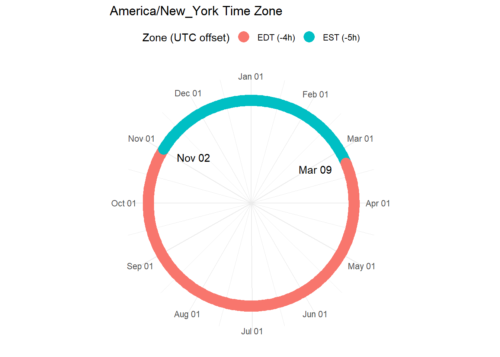
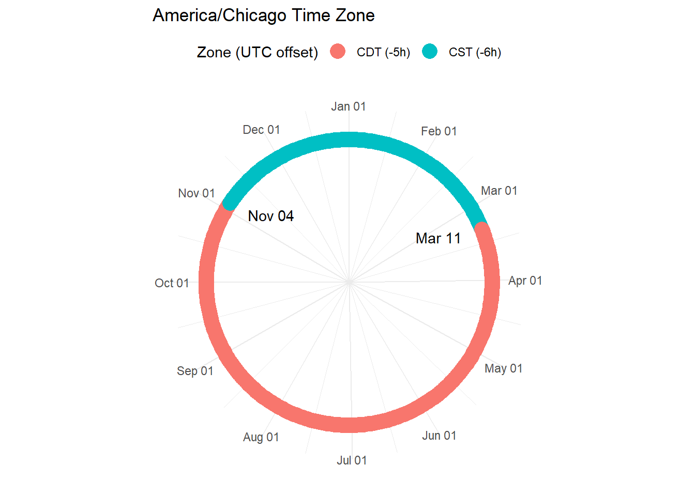
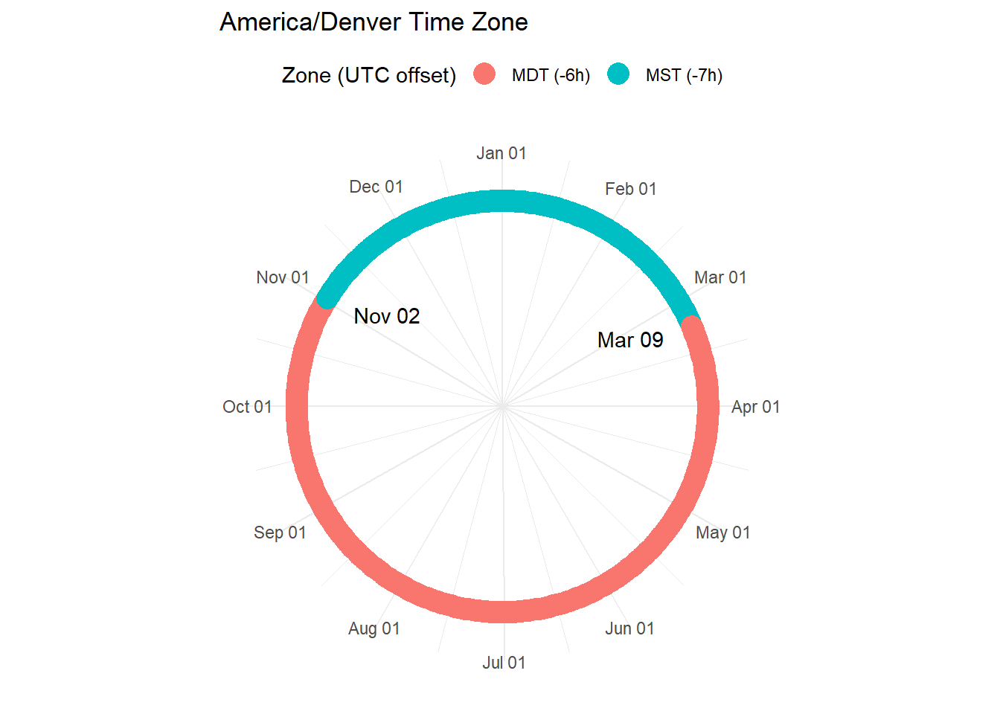

installation_nldas
Expand dataframe with indices and unit conversions
Identify timezones for local time conversion
# GMT adjust
time_zones <-
read_rds("data/select_bases.rds") %>%
dplyr::select(site_name, centroid) %>%
mutate(time_zone = lutz::tz_lookup(centroid, crs = 4326, method = "accurate")) %>%
as_tibble() %>%
dplyr::select(site_name, time_zone) %>%
mutate(site_name = stringr::str_replace_all(site_name, " ", "_"),
site_name = stringr::str_to_lower(site_name))
time_zones ## # A tibble: 25 x 2
## site_name time_zone
## <chr> <chr>
## 1 fort_benning_ga America/New_York
## 2 fort_campbell America/Chicago
## 3 mcb_quantico America/New_York
## 4 mcrd_san_diego America/Los_Angeles
## 5 fort_riley America/Chicago
## 6 ntc_and_fort_irwin America/Los_Angeles
## 7 fort_gordon America/New_York
## 8 twentynine_palms_main_base America/Los_Angeles
## 9 fort_sill America/Chicago
## 10 fort_carson America/Denver
## # ... with 15 more rowslutz::tz_plot("America/New_York")
lutz::tz_plot("America/Chicago")
lutz::tz_plot("America/Denver")
lutz::tz_plot("America/Los_Angeles")
Add local time column to NLDAS dataframe
This will serve as an input to WBGT estimate calculations.
nldas_df <- read_rds("data/nldas_df.rds")
# Inspect for missing values
nldas_df %>% inspectdf::inspect_na()
# timezones cannot be vectorized in lubridate, therefore `case_when` used
# https://community.rstudio.com/t/working-with-timezones-in-lubridate/4260
# https://stackoverflow.com/questions/55352166/how-to-use-lubridate-as-datetime-function-in-combination-with-dplyr-mutate-and-c
# (Without the additional `as_datetime(as.character))`, each value receives the result of the first item in case_when- Eglin converts to EST instead of CST)
nldas_time_zone <-
nldas_df %>%
mutate(utc_dttm = lubridate::ymd_hm(date_time)) %>%
dplyr::select(utc_dttm, installation, everything(), -date_time) %>%
left_join(time_zones, by = c("installation" = "site_name")) %>%
dplyr::mutate(local_dttm = dplyr::case_when(
.$time_zone == "America/New_York" ~ as.character(with_tz(.$utc_dttm, tz = "America/New_York")),
.$time_zone == "America/Chicago" ~ as.character(with_tz(.$utc_dttm, tz = "America/Chicago")),
.$time_zone == "America/Denver" ~ as.character(with_tz(.$utc_dttm, tz = "America/Denver")),
.$time_zone == "America/Los_Angeles" ~ as.character(with_tz(.$utc_dttm, tz = "America/Los_Angeles"))),
local_dttm = lubridate::ymd_hms(local_dttm)) %>%
dplyr::select(utc_dttm, local_dttm, everything(), -time_zone)Meteorology conversions and heat index
From original NLDAS variables, add windspeed, temp in F and C, relative humidity, dew point (C), heat index (F)
nldas_wide <-
nldas_time_zone %>%
mutate(windspeed = sqrt(UGRD^2 + VGRD^2),
tmp_f = weathermetrics::convert_temperature(TMP, old_metric = "kelvin", new_metric = "fahrenheit"),
tmp_c = weathermetrics::convert_temperature(TMP, old_metric = "kelvin", new_metric = "celsius"),
rh = humidity::SH2RH(SPFH, TMP, p = PRES, isK = TRUE),
dp_c = humidity.to.dewpoint(rh = rh, t = tmp_c, temperature.metric = "celsius"),
heat_index = weathermetrics::heat.index(t = tmp_f,
rh = rh,
temperature.metric = "fahrenheit",
output.metric = "fahrenheit",
round = 2))
# Inspect missing data: dew point/ heat index if relative humidity below 0% or above 100%
nldas_wide %>%
inspectdf::inspect_na()
nldas_wide %>%
filter(is.na(dp_c)) %>%
arrange(desc(rh))
# Restrict RH to 100%
nldas_wide <-
nldas_time_zone %>%
mutate(windspeed = sqrt(UGRD^2 + VGRD^2),
tmp_f = weathermetrics::convert_temperature(TMP, old_metric = "kelvin", new_metric = "fahrenheit"),
tmp_c = weathermetrics::convert_temperature(TMP, old_metric = "kelvin", new_metric = "celsius"),
rh = humidity::SH2RH(SPFH, TMP, p = PRES, isK = TRUE),
rh = case_when(
rh > 100 ~ 100,
rh <= 100 ~ rh
),
dp_c = humidity.to.dewpoint(rh = rh, t = tmp_c, temperature.metric = "celsius"),
heat_index = weathermetrics::heat.index(t = tmp_f,
rh = rh,
temperature.metric = "fahrenheit",
output.metric = "fahrenheit",
round = 2))
nldas_wide %>%
inspectdf::inspect_na()
nldas_wide %>% summary()Wet Bulb Globe Temperature (WBGT) Estimate
We will apply a wrapper of the C code developed by Liljegren et al to estimate WBGT from datasets of standard meterological measurements . This product was produced by UChicago Argonne, LLC under contract with the Department of Energy (GitHub link). The source code is available at: (link).
In addition to the weather variables and time, we will need lat and lon columns for the WBGT function.
# Add lat/lon to nldas dataframe
# Create lat lon table of centroids
base_coordinates <-
read_rds("data/select_bases.rds") %>%
as_tibble() %>%
dplyr::select(site_name, centroid) %>%
mutate(longitude = unlist(map(centroid,1)),
latitude = unlist(map(centroid,2)),
site_name = stringr::str_replace_all(site_name, " ", "_"),
site_name = stringr::str_to_lower(site_name)) %>%
dplyr::select(-centroid)
base_coordinates ## # A tibble: 25 x 3
## site_name longitude latitude
## <chr> <dbl> <dbl>
## 1 fort_benning_ga -84.8 32.4
## 2 fort_campbell -87.6 36.6
## 3 mcb_quantico -77.5 38.6
## 4 mcrd_san_diego -117. 32.7
## 5 fort_riley -96.8 39.2
## 6 ntc_and_fort_irwin -117. 35.4
## 7 fort_gordon -82.2 33.4
## 8 twentynine_palms_main_base -116. 34.5
## 9 fort_sill -98.5 34.7
## 10 fort_carson -105. 38.5
## # ... with 15 more rowsWBGT with mdljts wrapper. Create a dataframe with the required columns for the wbgt_df function.
# Create dataframe with columns needed for wbgt::wbgt_df (mdljts wrapper)
# Join lat and lon
nldas_wide <-
nldas_wide %>%
left_join(base_coordinates, by = c("installation" = "site_name")) %>%
dplyr::select(utc_dttm, local_dttm, installation, longitude, latitude, everything())
nldas_wide
# Create datframe for `wbgt_df` function
wbgt_mdljts_df <-
nldas_wide %>%
mutate(
year = lubridate::year(local_dttm),
month = lubridate::month(local_dttm),
day = lubridate::day(local_dttm),
hour = lubridate::hour(local_dttm),
minute = lubridate::minute(local_dttm),
gmt = lubridate::hour(utc_dttm),
avg = 60,
lat = latitude,
lon = longitude,
solar = DSWRF,
pres = PRES / 100,
Tair = tmp_c,
relhum = rh,
speed = windspeed,
zspeed = 10,
dT = 0,
urban = 0) %>%
dplyr::select(year:urban)
wbgt_mdljts_df
# Execute WBGT wrapper on entire dataframe
wbgt_mdljts <-
wbgt::wbgt_df(wbgt_mdljts_df) %>%
dplyr::select(wbgt)
# Bind WBGT column to NLDAS dataframe and add Fahrenheit conversion
nldas_wide <-
nldas_wide %>%
bind_cols(wbgt_mdljts) %>%
mutate(wbgt_f = weathermetrics::convert_temperature(wbgt, old_metric = "celsius", new_metric = "fahrenheit"))
# write_rds(nldas_wide, path = "data/nldas_wide.rds")“Wide” NLDAS dataframe
# View "wide" NLDAS dataframe
#
nldas_wide <-
read_rds("data/nldas_wide.rds")
nldas_wide## # A tibble: 6,472,525 x 19
## utc_dttm local_dttm installation longitude latitude TMP
## <dttm> <dttm> <chr> <dbl> <dbl> <dbl>
## 1 1990-01-01 00:00:00 1989-12-31 18:00:00 eglin_afb -86.5 30.6 291.
## 2 1990-01-01 01:00:00 1989-12-31 19:00:00 eglin_afb -86.5 30.6 290.
## 3 1990-01-01 02:00:00 1989-12-31 20:00:00 eglin_afb -86.5 30.6 289.
## 4 1990-01-01 03:00:00 1989-12-31 21:00:00 eglin_afb -86.5 30.6 288.
## 5 1990-01-01 04:00:00 1989-12-31 22:00:00 eglin_afb -86.5 30.6 287.
## 6 1990-01-01 05:00:00 1989-12-31 23:00:00 eglin_afb -86.5 30.6 287.
## 7 1990-01-01 06:00:00 1990-01-01 00:00:00 eglin_afb -86.5 30.6 286.
## 8 1990-01-01 07:00:00 1990-01-01 01:00:00 eglin_afb -86.5 30.6 285.
## 9 1990-01-01 08:00:00 1990-01-01 02:00:00 eglin_afb -86.5 30.6 284.
## 10 1990-01-01 09:00:00 1990-01-01 03:00:00 eglin_afb -86.5 30.6 283.
## # ... with 6,472,515 more rows, and 13 more variables: SPFH <dbl>, PRES <dbl>,
## # UGRD <dbl>, VGRD <dbl>, DSWRF <dbl>, windspeed <dbl>, tmp_f <dbl>,
## # tmp_c <dbl>, rh <dbl>, dp_c <dbl>, heat_index <dbl>, wbgt <dbl>,
## # wbgt_f <dbl>nldas_wide %>% summary## utc_dttm local_dttm installation
## Min. :1990-01-01 00:00:00 Min. :1989-12-31 16:00:00 Length:6472525
## 1st Qu.:1997-05-20 21:00:00 1st Qu.:1997-05-20 16:00:00 Class :character
## Median :2004-10-07 18:00:00 Median :2004-10-07 13:00:00 Mode :character
## Mean :2004-10-07 18:00:00 Mean :2004-10-07 12:28:58
## 3rd Qu.:2012-02-25 15:00:00 3rd Qu.:2012-02-25 09:00:00
## Max. :2019-07-15 12:00:00 Max. :2019-07-15 08:00:00
## longitude latitude TMP SPFH
## Min. :-122.59 Min. :29.39 Min. :249.8 Min. :0.0000255
## 1st Qu.:-104.85 1st Qu.:32.25 1st Qu.:284.0 1st Qu.:0.0045288
## Median : -93.12 Median :34.04 Median :291.1 Median :0.0082613
## Mean : -94.81 Mean :34.81 Mean :290.6 Mean :0.0088687
## 3rd Qu.: -81.62 3rd Qu.:36.62 3rd Qu.:297.9 3rd Qu.:0.0126411
## Max. : -75.59 Max. :47.03 Max. :318.8 Max. :0.0241628
## PRES UGRD VGRD DSWRF
## Min. : 79748 Min. :-18.0500 Min. :-16.3400 Min. : 0.000
## 1st Qu.: 96865 1st Qu.: -1.6500 1st Qu.: -1.3700 1st Qu.: 0.000
## Median : 99882 Median : 0.3200 Median : 0.9000 Median : 2.172
## Mean : 97565 Mean : 0.3377 Mean : 0.7182 Mean : 207.132
## 3rd Qu.:100912 3rd Qu.: 2.2600 3rd Qu.: 2.7800 3rd Qu.: 387.220
## Max. :104400 Max. : 17.7500 Max. : 19.6800 Max. :1224.570
## windspeed tmp_f tmp_c rh
## Min. : 0.000 Min. :-10.03 Min. :-23.35 Min. : 0.2157
## 1st Qu.: 2.429 1st Qu.: 51.48 1st Qu.: 10.82 1st Qu.: 48.0930
## Median : 3.454 Median : 64.22 Median : 17.90 Median : 68.5091
## Mean : 3.765 Mean : 63.37 Mean : 17.43 Mean : 64.2367
## 3rd Qu.: 4.766 3rd Qu.: 76.60 3rd Qu.: 24.78 3rd Qu.: 84.1217
## Max. :20.673 Max. :114.22 Max. : 45.68 Max. :100.0000
## dp_c heat_index wbgt wbgt_f
## Min. :-52.506 Min. :-10.03 Min. :-24.400 Min. :-11.92
## 1st Qu.: 1.658 1st Qu.: 49.49 1st Qu.: 8.932 1st Qu.: 48.08
## Median : 10.673 Median : 63.59 Median : 15.987 Median : 60.78
## Mean : 9.146 Mean : 63.17 Mean : 15.210 Mean : 59.38
## 3rd Qu.: 17.309 3rd Qu.: 77.05 3rd Qu.: 22.385 3rd Qu.: 72.29
## Max. : 27.747 Max. :117.32 Max. : 42.050 Max. :107.69# Inspect for missing values
nldas_wide %>%
inspectdf::inspect_na()## # A tibble: 19 x 3
## col_name cnt pcnt
## <chr> <int> <dbl>
## 1 utc_dttm 0 0
## 2 local_dttm 0 0
## 3 installation 0 0
## 4 longitude 0 0
## 5 latitude 0 0
## 6 TMP 0 0
## 7 SPFH 0 0
## 8 PRES 0 0
## 9 UGRD 0 0
## 10 VGRD 0 0
## 11 DSWRF 0 0
## 12 windspeed 0 0
## 13 tmp_f 0 0
## 14 tmp_c 0 0
## 15 rh 0 0
## 16 dp_c 0 0
## 17 heat_index 0 0
## 18 wbgt 0 0
## 19 wbgt_f 0 0# Inspect date coverage
## Unique dates
nldas_wide %>%
group_by(installation) %>%
summarize(unique_utc = n_distinct(utc_dttm)) %>%
arrange(unique_utc) ## # A tibble: 25 x 2
## installation unique_utc
## <chr> <int>
## 1 eglin_afb 258901
## 2 fort_benning_ga 258901
## 3 fort_bliss 258901
## 4 fort_bragg 258901
## 5 fort_campbell 258901
## 6 fort_carson 258901
## 7 fort_drum 258901
## 8 fort_gordon 258901
## 9 fort_hood 258901
## 10 fort_jackson 258901
## # ... with 15 more rowsnldas_wide %>%
group_by(installation) %>%
summarize(unique_local = n_distinct(local_dttm)) %>%
arrange(unique_local)## # A tibble: 25 x 2
## installation unique_local
## <chr> <int>
## 1 eglin_afb 258872
## 2 fort_benning_ga 258872
## 3 fort_bliss 258872
## 4 fort_bragg 258872
## 5 fort_campbell 258872
## 6 fort_carson 258872
## 7 fort_drum 258872
## 8 fort_gordon 258872
## 9 fort_hood 258872
## 10 fort_jackson 258872
## # ... with 15 more rows## Duplicate dates
dup_times <-
nldas_wide %>%
group_by(installation) %>%
janitor::get_dupes(local_dttm)
dup_times %>% count(local_dttm)## # A tibble: 29 x 2
## local_dttm n
## <dttm> <int>
## 1 1990-10-28 01:00:00 50
## 2 1991-10-27 01:00:00 50
## 3 1992-10-25 01:00:00 50
## 4 1993-10-31 01:00:00 50
## 5 1994-10-30 01:00:00 50
## 6 1995-10-29 01:00:00 50
## 7 1996-10-27 01:00:00 50
## 8 1997-10-26 01:00:00 50
## 9 1998-10-25 01:00:00 50
## 10 1999-10-31 01:00:00 50
## # ... with 19 more rows # Duplicates present in local time, occur at 1am local during Oct/Nov time change
# Mean temperature (K) from Jan 1990 - July 2019 (year-round)
nldas_wide %>%
group_by(installation) %>%
summarise(mean_tmp = mean(TMP)) %>%
arrange(desc(mean_tmp))## # A tibble: 25 x 2
## installation mean_tmp
## <chr> <dbl>
## 1 lackland_afb 295.
## 2 fort_sam_houston 295.
## 3 fort_gordon 294.
## 4 eglin_afb 294.
## 5 mcrd_beaufort_parris_island 294.
## 6 fort_drum 293.
## 7 twentynine_palms_main_base 293.
## 8 fort_lewis 293.
## 9 fort_polk 292.
## 10 fort_benning_ga 292.
## # ... with 15 more rows# Mean WBGT (F) from Jan 1990 - July 2019 (year-round)
nldas_wide %>%
group_by(installation) %>%
summarise(mean_wbgt_f = mean(wbgt_f)) %>%
arrange(desc(mean_wbgt_f))## # A tibble: 25 x 2
## installation mean_wbgt_f
## <chr> <dbl>
## 1 eglin_afb 67.2
## 2 mcrd_beaufort_parris_island 67.1
## 3 fort_sam_houston 66.7
## 4 lackland_afb 66.6
## 5 fort_drum 65.6
## 6 fort_lewis 64.7
## 7 fort_gordon 64.3
## 8 fort_benning_ga 63.5
## 9 mcb_camp_lejeune 63.0
## 10 fort_hood 62.3
## # ... with 15 more rows“Long” NLDAS dataframe
# Gather by local time and location
# (90+ million rows for 25 locations, 1990-2018 hourly)
nldas_long <-
nldas_wide %>%
dplyr::select(installation, utc_dttm, tmp_f, rh, heat_index, wbgt_f) %>%
tidyr::gather(key = "variable", value = "value", tmp_f:wbgt_f)
# write_rds(nldas_long, path = "data/nldas_long.rds")nldas_long <-
read_rds("data/nldas_long.rds")
nldas_longNested NLDAS dataframe
Create List-column for installation/variable pairs
# Increase memory limit
memory.limit()
memory.limit(size = 56000)
nldas_nest <-
nldas_long %>%
dplyr::select(installation, variable, utc_dttm, value) %>%
nest(., data = utc_dttm:value)
# write_rds(nldas_nest, path = "data/nldas_nest.rds")nldas_nest <-
read_rds("data/nldas_nest.rds")
nldas_nest## # A tibble: 100 x 3
## installation variable data
## <chr> <chr> <list<df[,2]>>
## 1 eglin_afb tmp_f [258,901 x 2]
## 2 fort_benning_ga tmp_f [258,901 x 2]
## 3 fort_bliss tmp_f [258,901 x 2]
## 4 fort_bragg tmp_f [258,901 x 2]
## 5 fort_campbell tmp_f [258,901 x 2]
## 6 fort_carson tmp_f [258,901 x 2]
## 7 fort_drum tmp_f [258,901 x 2]
## 8 fort_gordon tmp_f [258,901 x 2]
## 9 fort_hood tmp_f [258,901 x 2]
## 10 fort_jackson tmp_f [258,901 x 2]
## # ... with 90 more rowsnldas_nest %>%
filter(installation == "eglin_afb" & variable == "tmp_f") %>%
pull(data)## <list_of<
## tbl_df<
## utc_dttm: datetime<UTC>
## value : double
## >
## >[1]>
## [[1]]
## # A tibble: 258,901 x 2
## utc_dttm value
## <dttm> <dbl>
## 1 1990-01-01 00:00:00 64.1
## 2 1990-01-01 01:00:00 62.5
## 3 1990-01-01 02:00:00 60.9
## 4 1990-01-01 03:00:00 59.3
## 5 1990-01-01 04:00:00 57.8
## 6 1990-01-01 05:00:00 56.2
## 7 1990-01-01 06:00:00 54.7
## 8 1990-01-01 07:00:00 53.2
## 9 1990-01-01 08:00:00 51.8
## 10 1990-01-01 09:00:00 50.4
## # ... with 258,891 more rows